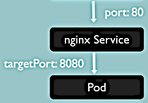
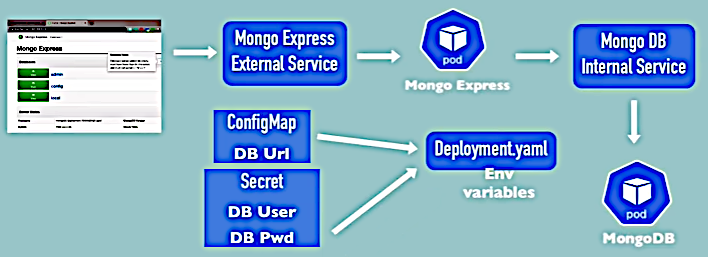
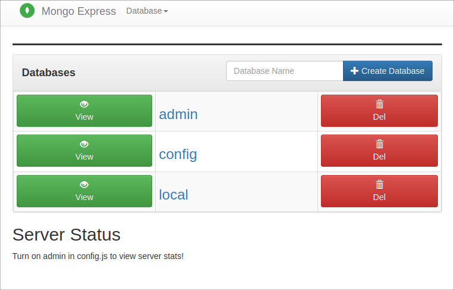

[BACK]
Jul 3, 2021
In non-Linux environment
--vm-driverparameter must be used.
$ minikube start
. . .
* Done! kubectl is now configured to use "minikube" cluster and "default" namespace by default
$ minikube status
minikube
type: Control Plane
host: Running
kubelet: Running
apiserver: Running
kubeconfig: Configured
$ kubectl get nodes
NAME STATUS ROLES AGE VERSION
minikube Ready control-plane,master 14h v1.20.7There's the only Master Node so far.
kubectl commands$ kubectl get pods
No resources found in default namespace.
$ kubectl get services
NAME TYPE CLUSTER-IP EXTERNAL-IP PORT(S) AGE
kubernetes ClusterIP 10.96.0.1 <none> 443/TCP 14h$ kubectl create -h
Create a resource from a file or from stdin.
JSON and YAML formats are accepted.
. . .
Available Commands:
. . .
deployment Create a deployment with the specified name.
ingress Create an ingress with the specified name.
job Create a job with the specified name.
secret Create a secret using specified subcommand
service Create a service using specified subcommand.
. . .But there's no pod in the Available Commands. That's because we are not creating Pods
directly. We use Deployments (abstraction over Pods) instead.
$ kubectl create deployment nginx-depl --image=nginx
deployment.apps/nginx-depl createdThis used the latest version of the image on the Docker Hub.
$ kubectl get deployments
NAME READY UP-TO-DATE AVAILABLE AGE
nginx-depl 1/1 1 1 3m53s
$ kubectl get pods
NAME READY STATUS RESTARTS AGE
nginx-depl-5c8bf76b5b-rmnmj 1/1 Running 0 5m2s
$ kubectl get replicasets
NAME DESIRED CURRENT READY AGE
nginx-depl-5c8bf76b5b 1 1 1 6m59s$ kubectl edit deployment nginx-deplThe auto-generated file of the Deployment will be opened in the text editor. Let's, for example,
replace - image: nginx by - image: nginx:1.20 and save the configuration.
deployment.apps/nginx-depl edited
greg@deimos:~$ kubectl get pods
NAME READY STATUS RESTARTS AGE
nginx-depl-58f65d4b6f-hk44c 1/1 Running 0 30s
$ kubectl get replicasets
NAME DESIRED CURRENT READY AGE
nginx-depl-58f65d4b6f 1 1 1 5m33s
nginx-depl-5c8bf76b5b 0 0 0 36mWe see the new Deployment with the new ID and that the old deployment has no replicas in its ReplicaSet.
$ kubectl logs nginx-depl-58f65d4b6f-hk44c
/docker-entrypoint.sh: /docker-entrypoint.d/ is not empty, will attempt to perform configuration
/docker-entrypoint.sh: Looking for shell scripts in /docker-entrypoint.d/
. . .
2021/07/03 10:06:05 [notice] 1#1: start worker process 35Let's create another deployment and look at its log:
$ kubectl create deployment mongo-depl --image=mongo
deployment.apps/mongo-depl created
$ kubectl get pods
NAME READY STATUS RESTARTS AGE
mongo-depl-5fd6b7d4b4-jj4b5 1/1 Running 0 47s
nginx-depl-58f65d4b6f-hk44c 1/1 Running 0 88m
$ kubectl logs mongo-depl-5fd6b7d4b4-jj4b5
{"t":{"$date":"2021-07-03T11:34:44.399+00:00"},"s":"I", "c":"CONTROL", "id":23285, "ctx":"main",
"msg":"Automatically disabling TLS 1.0, to force-enable TLS 1.0 specify --sslDisabledProtocols 'none'"}
. . .
{"t":{"$date":"2021-07-03T11:34:45.075+00:00"},"s":"I", "c":"NETWORK", "id":23015,
"ctx":"listener","msg":"Listening on","attr":{"address":"0.0.0.0"}}
{"t":{"$date":"2021-07-03T11:34:45.075+00:00"},"s":"I", "c":"NETWORK", "id":23016,
"ctx":"listener","msg":"Waiting for connections","attr":{"port":27017,"ssl":"off"}}
. . .Getting Pod information:
$ kubectl describe pod mongo-depl-5fd6b7d4b4-jj4b5
Name: mongo-depl-5fd6b7d4b4-jj4b5
. . .
Events:
Type Reason Age From Message
---- ------ ---- ---- -------
Normal Scheduled 8m21s default-scheduler Successfully assigned default/mongo-depl-5fd6b7d4b4-jj4b5 to minikube
Normal Pulling 8m20s kubelet Pulling image "mongo"
Normal Pulled 7m38s kubelet Successfully pulled image "mongo" in 42.583008968s
Normal Created 7m37s kubelet Created container mongo
Normal Started 7m37s kubelet Started container mongoAnother very useful command allows to enter a Pod as a root user:
$ kubectl exec -it mongo-depl-5fd6b7d4b4-jj4b5 -- /bin/bash
root@mongo-depl-5fd6b7d4b4-jj4b5:/# whoami
root
root@mongo-depl-5fd6b7d4b4-jj4b5:/# exit
exit
$$ kubectl get deployments
NAME READY UP-TO-DATE AVAILABLE AGE
mongo-depl 1/1 1 1 22m
nginx-depl 1/1 1 1 141m
$ kubectl delete deployment mongo-depl
deployment.apps "mongo-depl" deleted
$ kubectl get pods
NAME READY STATUS RESTARTS AGE
mongo-depl-5fd6b7d4b4-jj4b5 0/1 Terminating 0 22m
nginx-depl-58f65d4b6f-hk44c 1/1 Running 0 110mIt needs some little time to complete the operation:
$ kubectl get pods
NAME READY STATUS RESTARTS AGE
nginx-depl-58f65d4b6f-hk44c 1/1 Running 0 110m
$ kubectl get replicasets
NAME DESIRED CURRENT READY AGE
nginx-depl-58f65d4b6f 1 1 1 111m
nginx-depl-5c8bf76b5b 0 0 0 142mWe can do all the CRUD operation the similar way on the K8s components (like Deployments, Pods, Services, etc.). We can specify all the parameters (like Deployment name, image name, etc.) in the command line but that is impractical. That's why we would usually work with K8s configuration files.
First create the configuration file:
$ vi nginx-deployment.yamlFill it with the content of the file
nginx-deployment.yaml.
$ kubectl apply -f nginx-deployment.yaml
deployment.apps/nginx-deployment created
$ kubectl get pods
NAME READY STATUS RESTARTS AGE
nginx-deployment-f4b7bbcbc-gpffv 1/1 Running 0 50s
nginx-deployment-f4b7bbcbc-w9tpc 1/1 Running 0 50s
$ kubectl get deployments
NAME READY UP-TO-DATE AVAILABLE AGE
nginx-deployment 2/2 2 2 5m45sWe see two Pods because we specified replicas: 2 in the configuration file.
We can change the configuration file and apply it again. In this case K8s will update the
existing Deployment. For example, lets replace replicas: 2 by replicas: 1:
$ kubectl apply -f nginx-deployment.yaml
deployment.apps/nginx-deployment configured
$ kubectl get deployments
NAME READY UP-TO-DATE AVAILABLE AGE
nginx-deployment 1/1 1 1 12m
$ kubectl get po
NAME READY STATUS RESTARTS AGE
nginx-deployment-f4b7bbcbc-gpffv 1/1 Running 0 12mHere K8s decided itself which Pod to stop.
kubectl commandsCRUD commands:
kubectl create deployment [name]kubectl edit deployment [name]kubectl delete deployment [name]Status of K8s components: kubectl get nodes | pods | services | replicasets | deployments
Debugging Pods:
kubectl logs [pod name]kubectl exec -it [pod name] -- /bin/bashkubectl describe pod [pod name]Use configuration file for CRUD:
kubectl apply -f [file name]kubectl delete -f [file name]See nginx-deployment.yaml and nginx-service.yaml.
kind: Deployment and kind: Service show what we are going to create.
matadata:spec:). It is specific to the kind of the component.status: — automatically generated and added by K8s. This is how K8s
continuously tracks the desired and the actual states and makes decides about the
self-healing.The status information is held in the etcd.
If we specify and apply spec/replicas: 2 but actual is:
$ kubectl get deployment nginx-deployment -o yaml | less
. . .
apiVersion: apps/v1
kind: Deployment
metadata:
. . .
name: nginx-deployment
. . .
status:
availableReplicas: 1
. . .Then K8s will see the problem and will try to create a new replica ASAP.
YAML (a recursive acronym for "YAML Ain't Markup Language"): Wikipedia | Official site.
It's a good practice to store configuration files the code (see IAAC, Infrastructure As Code, concept).
template)
Whenever we want to create a Pod we create a Deployment and K8s takes care of the rest.
See nginx-deployment.yaml,
spec/template:. The template also has its metadata and specification. So it's a configuration file
inside a configuration file. The latter configuration applies to a Pod, so it is the blueprint
for a Pod.
This is done using labels and selectors. Also see K8s documentation Labels and Selectors.

See nginx-deployment.yaml and nginx-service.yaml.


So the Service will accept requests on the port 80 and forwards them the the to port 8080
of the Pod.
Placing the YAML files into the working accessible directory and applying them:
$ kubectl apply -f nginx-deployment.yaml
deployment.apps/nginx-deployment unchanged
$ kubectl apply -f nginx-service.yaml
service/nginx-service createdNow getting more detailed information about the Pods:
$ kubectl get pods -o wide
NAME READY STATUS RESTARTS AGE IP NODE NOMINATED NODE READINESS GATES
nginx-deployment-f4b7bbcbc-6kbgw 1/1 Running 0 30h 172.17.0.5 minikube <none> <none>
nginx-deployment-f4b7bbcbc-gpffv 1/1 Running 0 31h 172.17.0.6 minikube <none> <none>Two pods as we have replicas: 2. Looking at the service:
$ kubectl get services
NAME TYPE CLUSTER-IP EXTERNAL-IP PORT(S) AGE
kubernetes ClusterIP 10.96.0.1 <none> 443/TCP 2d1h
nginx-service ClusterIP 10.110.173.246 <none> 80/TCP 117s
$ kubectl describe service nginx-service
Name: nginx-service
. . .
Selector: app=nginx
. . .
TargetPort: 8080/TCP
Endpoints: 172.17.0.5:8080,172.17.0.6:8080
. . .Now let's look at the status (that is automatically generated):
$ kubectl get deployment nginx-deployment -o yaml > nginx-deployment-result.yaml
$ less nginx-deployment-result.yamlThis automatically generated configuration contains a lot of runtime data. So if we want to create a blueprint out of it then we need to clean it much.
We can delete the components using configuration files:
$ kubectl delete -f nginx-deployment.yaml
deployment.apps "nginx-deployment" deleted
$ kubectl delete -f nginx-service.yaml
service "nginx-service" deleted
See provided/demo-kubernetes-components/.
Minicube cluster must be running (if not start it with minicube start).
$ kubectl get all
NAME TYPE CLUSTER-IP EXTERNAL-IP PORT(S) AGE
service/kubernetes ClusterIP 10.96.0.1 <none> 443/TCP 2d12hSo the cluster is empty and we are starting from scratch.
We are going to create the file provided/demo-kubernetes-components/mongo.yaml.
$ cd ~/Kubernates/mongo_demo
vi mongo.yamlFill it with the initial configuration with lines 1..19.
Then visiting MongoDB Docker Hub page to find the image usage
details, particularly, that it listens on the port 27017 by default and uses environment
variables MONGO_INITDB_ROOT_USERNAME and MONGO_INITDB_ROOT_PASSWORD.
Adding this configuration but not specifying the exact secret values in the configuration file. Using Secret component instead.

Copying file
provided/demo-kubernetes-components/mongo-secret.yaml
to our working directory. type: Opaque would be different if we used SSL/TLS. Here's the way
the base64-encoded strings were obtained.
$ echo -n 'username' | base64
dXNlcm5hbWU=
$ echo -n 'password' | base64
cGFzc3dvcmQ=This is not a secure way of keeping secret data. There are built-in encryption options that are not enabled by default.
Applying the Secret:
$ kubectl apply -f mongo-secret.yaml
secret/mongodb-secret created
$ kubectl get secrets
NAME TYPE DATA AGE
default-token-fwttv kubernetes.io/service-account-token 3 2d18h
mongodb-secret Opaque 2 56sFilling the mongo.yaml file. Instead of
env:
- name: MONGO_INITDB_ROOT_USERNAME
value: usernamesetting
env:
- name: MONGO_INITDB_ROOT_USERNAME
valueFrom:
secretKeyRef:
name: mongodb-secret
key: mongo-root-usernameApplying the Deployment:
$ kubectl apply -f mongo.yaml
deployment.apps/mongodb-deployment created
$ kubectl get all
NAME READY STATUS RESTARTS AGE
pod/mongodb-deployment-796577dc64-l8sfd 1/1 Running 0 73s
NAME TYPE CLUSTER-IP EXTERNAL-IP PORT(S) AGE
service/kubernetes ClusterIP 10.96.0.1 <none> 443/TCP 2d18h
NAME READY UP-TO-DATE AVAILABLE AGE
deployment.apps/mongodb-deployment 1/1 1 1 73s
NAME DESIRED CURRENT READY AGE
replicaset.apps/mongodb-deployment-796577dc64 1 1 1 73sSo we see the running Pod, The Deployment and the ReplicaSet.
We will define multiple documents in one YAML file (separated by ---). Adding the lines starting
with --- in file
provided/demo-kubernetes-components/mongo.yaml
into the file with the same name in our working directory. This is reasonable since we cannot use
a DB server without a Service. In this part:
kind: Secret defines that a Service is configured;selector/app: mongodb links the Service with the Deployment;port: 27017 — the port that's exposed outside;targetPort: 27017 — the port in the target Pod where the requests will be forwarded.Now applying the same file:
$ kubectl apply -f mongo.yaml
deployment.apps/mongodb-deployment unchanged
service/mongodb-service created
$ kubectl get services
NAME TYPE CLUSTER-IP EXTERNAL-IP PORT(S) AGE
kubernetes ClusterIP 10.96.0.1 <none> 443/TCP 2d19h
mongodb-service ClusterIP 10.105.29.12 <none> 27017/TCP 78s
$ kubectl describe service mongodb-service
Name: mongodb-service
. . .
Endpoints: 172.17.0.6:27017
. . .
$ kubectl get pods -o wide
NAME READY STATUS RESTARTS AGE IP NODE NOMINATED NODE READINESS GATES
mongodb-deployment-8f6675bc5-x2pzj 1/1 Running 0 15m 172.17.0.6 minikube <none> <none>See provided/demo-kubernetes-components/mongo-express.yaml.
To create this file we visited the Mongo Express Docker Hub page
found that Mongo Express server listens on the port 8081 by default and uses a lot of
environment variables from which we need:
ME_CONFIG_MONGODB_PORTME_CONFIG_MONGODB_SERVERME_CONFIG_MONGODB_ADMINUSERNAMEME_CONFIG_MONGODB_ADMINPASSWORDFor the secret data we use the existing Secret component. For the other variables we are going to create a ConfigMap component. Copying the file provided/demo-kubernetes-components/mongo-configmap.yaml to our working directory.
The references to the ConfigMap is done like this:
- name: ME_CONFIG_MONGODB_SERVER
valueFrom:
configMapKeyRef:
name: mongodb-configmap
key: database_urlApplying first the ConfigMap, then the Deployment:
$ kubectl apply -f mongo-configmap.yaml
configmap/mongodb-configmap created
$ kubectl apply -f mongo-express.yaml
deployment.apps/mongo-express created
$ kubectl get pods
NAME READY STATUS RESTARTS AGE
mongo-express-78fcf796b8-5t7jf 1/1 Running 0 92s
mongodb-deployment-8f6675bc5-x2pzj 1/1 Running 0 43m
$ kubectl logs mongo-express-78fcf796b8-5t7jf
. . .
Mongo Express server listening at http://0.0.0.0:8081
Server is open to allow connections from anyone (0.0.0.0)
. . .Now we are going to expose the Mongo Express server for connection from browsers from the outside
the cluster. We are doing it the same way as in the file mongo.yaml, i.e. defining the Service
configuration in the same file mongo-express.yaml. What makes this Service external?
spec/type: LoadBalancer. Though it may be not a good name but in fact every external Service
has a function of load balancing;spec/ports/nodePort: 30000 — the port that will be visible from the outside. Must be
between 30000 and 32767.Applying the created configuration file:
$ kubectl apply -f mongo-express.yaml
deployment.apps/mongo-express unchanged
service/mongo-express-service created
$ kubectl get service
NAME TYPE CLUSTER-IP EXTERNAL-IP PORT(S) AGE
kubernetes ClusterIP 10.96.0.1 <none> 443/TCP 2d20h
mongo-express-service LoadBalancer 10.101.164.221 <pending> 8081:30000/TCP 67s
mongodb-service ClusterIP 10.105.29.12 <none> 27017/TCP 55m
EXTERNAL-IP = <pending>— this is because we run it in minikube, in a real K8s cluster we will see a certain IP address.
To open the Mongo Express web interface execute:
$ minikube service mongo-express-service
|-----------|-----------------------|-------------|---------------------------|
| NAMESPACE | NAME | TARGET PORT | URL |
|-----------|-----------------------|-------------|---------------------------|
| default | mongo-express-service | 8081 | http://192.168.49.2:30000 |
|-----------|-----------------------|-------------|---------------------------|
* Opening service default/mongo-express-service in default browser...
greg@deimos:~/Kubernates/mongo_demo$ MoTTY X11 proxy: Unsupported authorisation protocol
Unable to init server: Broadway display type not supported: localhost:10.0
Error: cannot open display: localhost:10.0This works when executing directly on the Ubuntu host. It opens the page in the default browser:

According to this minikube cannot expose external Services outside the cluster machine. Will use nginx to the request forward. nginx was installed before so its installation is not discussed here.
If minikube was restarted the following command must be executed:
$ minikube service mongo-express-service --url=true
http://192.168.49.2:30000The returned URL will be used later.
$ less /etc/nginx/nginx.conf
. . .
http {
. . .
include /etc/nginx/sites-enabled/*;
. . .
$ sudo vi /etc/nginx/sites-enabled/defaultAdd another server:
server {
listen 8040;
listen [::]:8040;
root /var/www/html;
# Add index.php to the list if you are using PHP
index index.html index.htm index.nginx-debian.html;
server_name _;
location / {
proxy_set_header Host $host;
proxy_set_header X-Real-IP $remote_addr;
proxy_pass http://192.168.49.2:30000;
}
}Then restart the nginx service:
$ sudo service nginx start
$ sudo service nginx status
. . .
Active: active (running) since Mon 2021-07-05 21:48:14 MSK; 7s ago
. . .
$ hostname -I
192.168.1.500 ...Then open the link http://192.168.1.500:8040/ in a browser on the other machine.
[BACK]